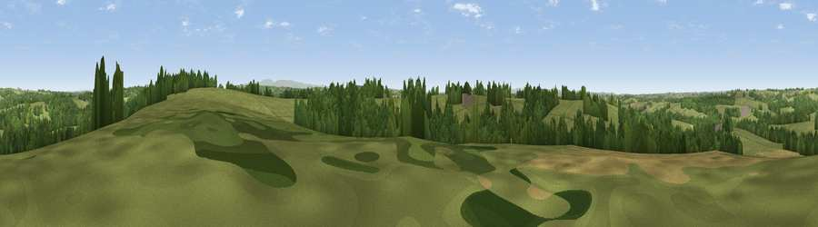

Viewpoint near Clawton
#32616 in England · top 68% of its area beats it · near ClawtonThe view, rendered

A 360° render of this exact spot computed from the terrain model, tree cover and land cover — summer colours, afternoon light, calibrated against photographs of famous viewpoints. Real trees, hedges and buildings will differ in detail.
The panorama
Grey silhouette: terrain skyline in each direction (720 bearings, Earth curvature and refraction included). Dashed green: skyline with trees (+15 m) and buildings (+8 m) as obstacles. Blue strip: how far the ground is visible on each bearing.
Where the view opens
Wedge length = distance to the farthest visible ground on that bearing (vegetation-aware). Rings at 10, 25 and 50 km.
What fills the view
73% grassland · 25% woodland · 1% cropland ·
Angular shares of the visible panorama (visual magnitude), not map area. Landscape diversity 0.29 (0–1 Shannon).
Key numbers
More beautiful places nearby
The staircase of upgrades: each row has a higher view potential than everything closer. Driving times are estimates from straight-line distance, calibrated against real road routing — check an actual route before setting out.
| Place | Direction | Drive | Score |
|---|---|---|---|
| Viewpoint near Hollacombe | NW · 3 km | ~7 min | 46.9 |
| Viewpoint near Hollacombe | N · 4 km | ~9 min | 60.3 |
| Viewpoint near Bratton Clovelly | ESE · 11 km | ~21 min | 60.9 |
| Viewpoint near Whitstone | W · 12 km | ~22 min | 65.1 |
| Viewpoint near Whitstone | W · 12 km | ~23 min | 69.4 |
| Viewpoint near Poughill | WNW · 18 km | ~31 min | 73.3 |
| Sourton Tors | ESE · 19 km | ~32 min | 74.8 |
| Viewpoint near Poundstock | W · 19 km | ~33 min | 76.0 |
50.77498, -4.29370 · source: screening · position refined by local search. Computed location — check access rights before visiting.